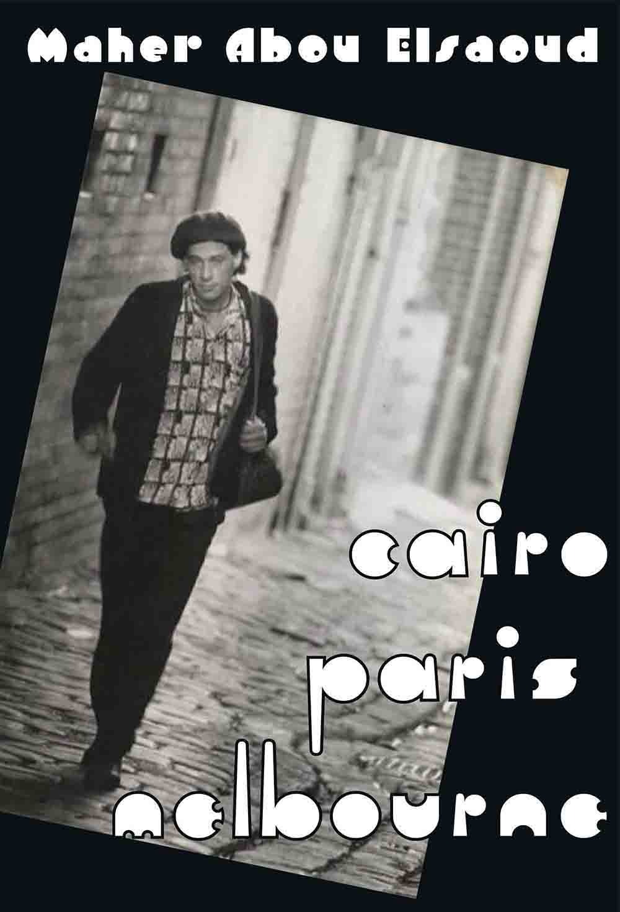

Cairo Paris Melbourne
Maher Abou Elsaoud

Description
In the mid-1960s Cairo was overpopulated and some of the poor could not find shelter. They resorted to the cemetery yards, and used them as houses, and they lived among the dead. I was born in one of these cemetery yards... Cairo Paris Melbourne is three novels in one. The original Arabic language novel established Elsaoud’s literary reputation. Set against the backdrop of Middle Eastern wars from 1967 to 2003, its Dickensian characters and acute social concerns assume new poignancy in light of today’s Arab Spring. Zoheir struggles to escape the poverty of the ‘City of the Dead’. Ghosts torment his childhood. Family, friends and villains that populate his world are evoked brilliantly through his young eyes. He learns of love and brutality quickly. Entering adolescence he yearns for another place, where he can find his purpose. He secures a visa to Paris in a comic tour de force, cleverly exposing corruption in Cairo. In France he is an immigrant worker, travelling with fellow Egyptians and reading Hamlet . He falls for the fascinating and destructive Caroline, holds a forged passport and is soon on the run from drug dealers in the Algerian quarter of Paris. Struggling with the chasm between East and West, fate leads him towards treachery, arrest and, eventually, Melbourne. Living above a café in Fitzroy, Zoheir descends into meaninglessness, yet finally finds an unexpected reason for living, one both redemptive and all consuming. Cairo is an old man crossing a crowded road. Paris is a pretty girl in search of a hero. Melbourne is an innocent child playing in a vast land. Our first person narrator has a naïve knowingness. Zoheir who becomes known as ‘Prince’ and takes on the persona of Zoheir Oqla, the inventor of tales, has a touch of Scheherazade about him. Cairo Paris Melbourne is a novel of the getting of responsibility
Description
In the mid-1960s Cairo was overpopulated and some of the poor could not find shelter. They resorted to the cemetery yards, and used them as houses, and they lived among the dead. I was born in one of these cemetery yards... Cairo Paris Melbourne is three novels in one. The original Arabic language novel established Elsaoud’s literary reputation. Set against the backdrop of Middle Eastern wars from 1967 to 2003, its Dickensian characters and acute social concerns assume new poignancy in light of today’s Arab Spring. Zoheir struggles to escape the poverty of the ‘City of the Dead’. Ghosts torment his childhood. Family, friends and villains that populate his world are evoked brilliantly through his young eyes. He learns of love and brutality quickly. Entering adolescence he yearns for another place, where he can find his purpose. He secures a visa to Paris in a comic tour de force, cleverly exposing corruption in Cairo. In France he is an immigrant worker, travelling with fellow Egyptians and reading Hamlet . He falls for the fascinating and destructive Caroline, holds a forged passport and is soon on the run from drug dealers in the Algerian quarter of Paris. Struggling with the chasm between East and West, fate leads him towards treachery, arrest and, eventually, Melbourne. Living above a café in Fitzroy, Zoheir descends into meaninglessness, yet finally finds an unexpected reason for living, one both redemptive and all consuming. Cairo is an old man crossing a crowded road. Paris is a pretty girl in search of a hero. Melbourne is an innocent child playing in a vast land. Our first person narrator has a naïve knowingness. Zoheir who becomes known as ‘Prince’ and takes on the persona of Zoheir Oqla, the inventor of tales, has a touch of Scheherazade about him. Cairo Paris Melbourne is a novel of the getting of responsibility
{kind=link}
Information
| ISBN | 9781876044756 |
| Release | 2012 |
| Pages | 333 |
About the Author
Reviews
Anna Couani, Rochford Street Review
Flying by the seat your pants Anna Couani (writer and poet) Rochford Street Review , 12 June 2012 It is an interesting fact that, while Australian writers festivals and other public literary events and programs showcase and celebrate the work of writers from other countries, there is little exposure given to Australian writers writing in languages other than English. So Cairo Paris Melbourne , a translation of a novel by an Egyptian Australian writer who writes in Arabic, is a welcome addition by Black Pepper Publishing to the Australian literary landscape. Maher Abou Elsaoud has had works published in Arabic in Egypt and speaks English, French and Arabic, having lived in Egypt, France and Australia. His knowledge of those countries has provided him with the settings for this novel. He writes primarily in his mother tongue and with this book, worked on the English translation with his translator, Ahmed Fathy who lives in Egypt. So especially now that both travel and communication are easy and accessible, writers like Elsaoud can maintain and capitalise on links with their country of origin. Very different from the migrant writers of a generation ago who felt isolated and cut off and were barely recognised in their adopted country. Cairo Paris Melbourne has a first person narrator in a kind of English that retains traces of its origins. In some ways it reads like an autobiography although it is fictional. The structure of the novel, the absence of big chunks of time in the narrator’s life, is evidence of that. Elsaoud has studied film and written film scripts and the cuts are certainly understandable in filmic terms. It traces parts of the narrator’s life journey across 30 years, starting with an innocent childhood, along with hair-raising experiences as an eavesdropper, then through myriad difficulties as a transient worker and culminating in a cynical adulthood in Melbourne. There is however, an unexpected redemption at the end of the book which gives the narrative a satisfying closure. Most Australians have had the experience of being tourists in foreign countries and have even roughed it a bit. However, the experience of a poor kid from Cairo as a traveller, flying by the seat of his pants without money, no parents wiring cash to the nearest American Express, is altogether another and very brutal world. It has the kind of adventurous and optimistic spirit you find in Slumdog Millionaire but without the Bollywood gloss or the happy ending. Similar is the close bond between the male friends and their generosity and kindness towards each other. The young eavesdropper in the Cairo section of the book has warm and loving connections with older females but also witnesses monstrous incidents involving the abuse of women amongst the street people and this, along with the ubiquitous corruption, seems to partly explain his desire to get out of Egypt. He is idealistic, believing that opportunities and a better society await in other places. However, the character is eventually ground down by unjust and unfair circumstances. As well, while he can see the injustice of the treatment of women in Cairo, he finds he doesn’t have the tools to cope with Western gender relations in a way that can bring him happiness. The character insulates himself from the consuming, controlling, heartbreaking behaviour of the Western women he encounters by becoming a Don Juan and hanging out with the other disillusioned bachelors in a Fitzroy coffee shop. It is personal relationships that are in the foreground of this novel, not the places, as might be suggested by the title of the book. The relationships are depicted from a masculinist perspective that I found a bit grating. However, the book is interesting to read, the plot is not predictable and many of the characters are intriguing and lovable.
Ed Wright, The Weekend Australian
New Australian Fiction Ed Wright The Weekend Australian , 9 June 2012 Now based in Melbourne, Maher Abou Elsaoud has successfully published novels in Arabic and was recently in Egypt for the filming of one, until it was disrupted by the Arab Spring. The picaresque Cairo Paris Melbourne is the third book in his opus and the first to be translated into English. It follows a young Egyptian, Abou Zoheir, from his poor but fascinating beginnings in a neighbourhood improvised from a cemetery on the outskirts of Cairo, to a life as a fruit picker, lover and theatre student in France, then as an inhabitant of the Fitzroy demi-monde in Melbourne. Elsaoud captures the characters of Zoheir’s childhood neighbourhood with humour and humanity. Characters such as Um Fawzy, the large beautiful kind woman, known to the neighbourhood as ‘the mattress of tenderness’, resonate in the mind long after the reading, as does Zoheir’s scamming but funny father. Although his own childhood has its tragedies, Zoheir shows a great sense for the neighbourhood gossip and the various tales that compose this section of the novel are arguably its highlight. The France section is more a road novel, a young naturally gifted man throwing himself at the mercy of life and being variously rewarded. Its open depiction of young men in thrall to their libidos and the rigidity of testosterone-driven idealism is oddly refreshing. It also captures beautifully that sense of the unlimited horizons of youth coming into conflict with established hierarchies of society. Readers will be reminded of Saul Bellow’s The Adventures of Augie March ..., Kerouac’s On the Road , or the novels of Norwegian author Agnar Mykle. It is treachery that forces Zoheir to leave France and love that leads him to Melbourne. But by the time we meet him there in his late 30s things have gone pear-shaped and disillusionment has set in. He is living in a single room above a café in Fitzroy, where he keeps company with a cast of misfits including an alcoholic ex-diplomat, a prostitute who dreams of love, a Serbian gambler, the Italian café owner, a stingy Chinese grocer, an impotent PhD student and another unrecognised novelist. It’s a reminder that true bohemias are not so much places of youthful transition as places where people congregate as a salve for the failures of their lives and their estrangement from the mainstream. While Zoheir’s rhetoric of disillusionment at times becomes a bit monotonous (pride can be very tedious), this is rescued by the fascinating character sketches and life logics of the people who surround him.